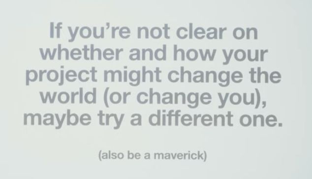

Quit it and be a maverick
(This is a rather personal note. You will notice that most of these thoughts will keep converging on the lack of a ToC and also perhaps a lack of a thorough literature review, that is intentional albeit a bit circular. I want this point to hit home for my own sake)
Thinking/process I have been using, until now, and why they should change:
Picking on the threads/schools of thought that “seem” closest to me.
- This “closeness” is arbitrary and vibes-based. It doesn’t really take into account what change I would like to bring to the field/world in particular.
- Even worse, I may have stumbled onto most of the things I have worked on rather than having approached them with an actual ToC.
- Most researchers I have looked up to are the ones that were pushed to me by various algorithms. (E.g. an early introduction to Neel Nanda and his work through YouTube’s algorithm. I was particularly inspired because of his Indian origins. I think it played a non-trivial role for my gradual shift to AI Safety)
- A lot of further thoughts were fed to me by the algorithm. The threads I picked up on, were thus already things that were now widely discussed.
Not reading the sources (and the inspiration behind them) enough.
- In Marathi, “vaachal tar vachaal” (read, and only then you will be saved.)
- I did much less reading work than actual “research work.” Any work done without any deeper understanding of the wider landscape can be grossly unproductive.
- This might look like I am discovering the importance of literature review from first principles. But it is more like I am discovering the importance of a ToC from first principles.
- Literature review, I think, is very different from drafting your ToC. A lit review leaves room for fairly incremental progress – it does not require to justify and argue for why this work is important.
Pen-pineapple-apple-pen researching:
- I think this kind of research is honestly great for new comers like myself. It might even be explicitly encouraged. But I think I should now graduate from PPAP research.
- To refine it further, I think I am at a place where I can do ToC driven research.
- Most times, I have noticed myself losing sight of the work itself and failing to quell the “so what” second thoughts.
As Cas said:

I take it as: if you’re not able to answer the “so what,” move on. (Starting now)
The bottleneck as I now see it – The Question itself (The ToC)
The mere formulation of a problem is often more essential than its solution, which […] requires creative imagination and marks real advances in science.
Albert Einstein
I concur, at the risk of burying myself into an “eternal” search for the perfect question, that the act of asking the question is extremely important. If I believe my search is going on an “eternal” mode, I should step back, look around, and probably read more (This is confusing, because reading more also forms an important part of the eternal loop).
What might “taking a step back” might involve? From what I know, it should come back to the ToC that you draft at the very beginning. What needs to change in the ToC? It should dictate what you do.
Chronic experiments.
- This is probably a big one. Never in my career have I ever set out with a firm ToC and a firmly falsifiable question such that I “stopped” any “experiment.” Ever.
- Experiments are trial and error loops, yes. But only in the sense of getting the hyperparameter settings right. Maybe you had a bad learning rate, some bad data, some bad orchestration, and probably a bad/noisy hypothesis. I of course should debug those issues and re-run stuff.
- Experiments are loops also in the sense of audits. Actually seeing what happened in the rollouts, whether the evals worked correctly is all valid within these loops.
- What imparts a sense of chronicness in the experiments is the not closing of the mental loop. I might even have done a lot of things, but it just would never fit into a clear bucket and the loop would never close in my brain. This is extremely draining.
- You end up thinking, “oh man, what happened to those experiments that you did, you still haven’t worked on them enough. Such a waste of time and resources.” When in fact, it was, but not for the reasons of a bad experiment. It was probably because of a bad ToC and a malformed falsifiable question.
I cannot say this enough but just fuck running anything without having a clear ToC ever again.
Motivated reasoning
I definitely have done it and been guided by it. I somehow think CS stuff is super cool (which it undeniably is), and the biggest solutions to humanity’s problems are going to come from a hardcore technical CS-flavored framework and the experiments that spring from it. This has absolutely no basis to be frank. Funnily enough, I am an electrical engineer, and I did my masters in information science. I haven’t taken a CS course more than three times in my life. But I have this tendency to think that CS stuff is just too cool that the solutions cannot not come from it.
This is where I am encountering the most resistance. I just feel, dare I say, repulsed by the word “governance.” I do think that alignment is going to come from a technical breakthrough. Again, why? I don’t have any basis, stake, or priors to say that. As I said, I’m not even a CS person. An admirer for sure (but not sure what for given my lack of stakes).
The main hurdle I faced while starting writing this was also something on the lines of this: “I am going to end up convincing myself to do governance research/exploration. Which will lead me down rabbit holes I won’t be able to escape for a bit.”
A sense of not belonging
Here you might see some seemingly lefty stuff. But I genuinely believe the bar is higher for me, as a south asian, non-immigrant student, with no stability/reason/prerogative to stay in the country where I am currently, no particular reason to keep pushing for my home country. I would acknowledge that I am still extremely privileged because I can afford GPT/Claude subscriptions and run experiments without worrying too much about <100$ costs. Largely though, I have mostly pushed on saying I am doing all this for the “love of the game.” Breaking into AI Safety for me, started because I sensed that the tide is lowkey turning there. (I have a thread to pull on here next.) This whole pivot has a great deal of pattern matching intuition behind it, not a ToC. Now, of course, I conduct myself in this space with a greater motivation and cause. (Only a week back I learnt that EA was a pretty big deal behind AIS)
“For the love of the game” thinking has gotten me till here, for sure. But it’s not going to sustain me any longer. It led me until I’ve reached this moment of realization: of the importance of a ToC, of the formation of a falsifiable question. Of course, the world is grayer than this, and I will continue to struggle in the grays. But everything seems to now have a termination point. The gray-struggle can continue only up to a point. Research, and change itself, cannot be about eternally struggling in the gray. There’s always more to read that can pull me out of ruts.
A project
For me, that has meant dabbling, then hastily starting something, and then linking it to something that might matter.
(I almost think that I shouldn’t post this on my website anymore. But if you’re this deep into my website, I’d wager you’re a friend and won’t hold this against me – I am also exaggerating things to an extent here and this isn’t an exhaustive description of how I function. Anyway.)
Drawing from the Cas talk, I have to work on communicating my work directly. As much as 50% of the time should be involved in contacting people for comments and/or collaboration and an eventual propagation of the work. Talking to people is what delivers the impact. Last mile delivery is an extremely important problem to spend energy on; and the last mile delivery of your project should be a paramount priority once the work is done. So much so that it should be your guiding principle. There is no greatness in doing research that feels esoteric to you. My audience should be well calibrated beforehand and the communication should be deliberately directed at them. If it didn’t get heard, it did not matter, genuinely.
There is a power law like curve here. A lot of decent, and even good projects won’t matter. Until they suddenly do: they create tremendous reach and/or direct impact. Reach is good, but impact is even better.
What do I now walk away with?
Of course, writing up all this doesn’t mean a decent project is going to walk in the door for me. I am still going to have to read: with a ToC in mind, and then search for a question that is tractable, that can actually change the world, and is effectively worth my time.
But I have confidence that the next project will be better by a huge margin. This time it will have a theory of change and more important: the hunger for impact.
And yeah, this is all supposed to sound overly ambitious/ over confident. That is the default internal mode of a lot of people I tend to like and I am no different. And it goes well with the maverick spirit of this whole thing. If you’re not being a maverick, then what are you being?
Quit it and be a maverick.
Source
Video and slide: Stephen Casper, How to Do Research That Actually Matters, Carnegie AI Safety Initiative.